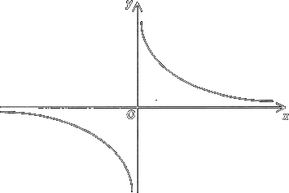

La proporzionalità
A proportion is an equality between two ratios, such as x1 / y1 = x2/y2. Two ordered pairs of positive numbers (x1, y1) and (x2, y2) are said to be proportional if their ratios are equal: x1 /y1 = x2 /y2. Two ordered pairs of positive numbers (x1, y1) and (x2, y2) are said to be proportional if their ratios are equal: x1 /y1 = x2 /y2. Quattro numeri a,b,c,d sono detti in proporzione quando il quoziente del primo per il secondo è uguale a quello del terzo per il quarto, cioè quando.
a / b = c / d
Il rapporto è una relazione tra due quantità, mentre la proporzione consiste in un’uguaglianza di rapporti tra due coppie di quantità.
Si riconosce subito che la proporzionalità fra coppie di grandezze sta in stretta relazione con la proporzionalità fra coppie di numeri. Date quattro grandezze A, B, C, D a due a due omogenee, a con b e c con d si dicono in proporzione se e solo se sono uguali i rapporti a : b e c: d. Dove a,b,c,d indicano le misure delle grandezze A, B, C, D. Ossia
a : b = c: d
Due classi di grandezze X and Y si diconono fra loro direttamente proporzionali se esiste una costante k non nulla, chiamata costante di proporzionalità diretta, tale che:
y = kx ∀x ∈ X, ∀y ∈ Y.
Il grafico di questa funzione è una retta passante per l'origine degli assi.
Il rapporto fra due elementi qualsiasi della prima classe è uguale al rapporto degli elementi corrispondenti della seconda, cioè se A e B sono direttamente proporzionali:
a1:a2 = b1: b2
Due classi di grandezze X and Y si diconono fra loro inversamente proporzionali se esiste una costante k non nulla, chiamata costante di proporzionalità inversa, tale che:
xy = k ∀x ∈ X, ∀y ∈ Y.
Il grafico di questa funzione è una iperbole equilatera che, per k > 0, si trova nel I° e III° quadrante:
Se A e B sono inversamente proporzionali allora vale la seguente:
a1:a2 = b2: b1
Problemi del tre semplice
Viene detto problema del tre semplice un problema nel quale è coinvolta UNA COPPIA DI GRANDEZZE direttamente o inversamente PROPORZIONALI, e si considerano 4 VALORI (2 DI UNA GRANDEZZA, PIÙ I 2 CORRISPONDENTI DELL’ALTRA). Di tali valori, 3 SONO NOTI, mentre IL RESTANTE È INCOGNITO ed è la richiesta del problema.
Tre semplice diretto
Problema. Se 4,5 metri di stoffa costano 20 euro, quanti metri di stoffa si potranno comprare con 15 euro.
La proporzionalità tra metri di stoffa e prezzo è diretta. La proporzione sarà dunque scritta come:
4,5 : x = 20 : 15
da cui x = 4.15 ⋅ 15/20 = 3.375 m
Un metodo alternativo consiste nella riduzione all'unità. Con 1€ si potranno acquistare 20/4.5 metri di stoffa, ossia 0.225 metri di stoffa. Dato che 4.5 metri di stoffa costano 20 euro, con 1€ si potreanno acquistare 4.5/20 metri di stoffa. Ma se con 1€ si comprano 0.225 metri di stoffa, con 15€ se ne acquistano 0.225 ⋅ 15 = 3.375 m.
Problema del tre semplice inverso
Problema. 8 braccianti portano a termine un dato lavoro in 20 ore. E se invece gli operai fossero solo 5, quante ore ci vorrebbero per ultimare il lavoro?
Soluzione. Qui la proporzionalità è evidentemente inversa, perché raddoppiando il numero di lavoratori si dimezza il numero delle ore occorrenti. Si scriverà la proporzione come
8 : 5 = x : 20
da cui x = 8 ⋅ 20/5 = 32.
Scorciatoia: se il numero di operai dimezzasse (⋅ 1/2), il numero di ore raddoppierebbe (⋅2). Quando il numero di operai passa da 8 a 5, subendo quindi una moltiplicazione per 5/8, il numero di ore risulterà moltiplicato per il rapporto inverso 8/5; perciò basta fare 20 moltiplicato 8/5, che dà 32.
In alternativa, senza proporzioni, con la “RIDUZIONE ALL’UNITÀ”: 8 braccianti completano il lavoro in 20 ore; allora se ci fosse 1 solo bracciante, lui ci metterebbe 20 ⋅ 8 = 160 = ore.
Quindi se i braccianti sono 5, ci metteranno 160/5 = 32 ore;SE PREFERIAMO, possiamo anche pensare di aver effettuato, piuttosto che una “riduzione all’unità”, un “CALCOLO DEL TOTALE”: il totale delle ore di lavoro necessarie (da ripartirsi poi fra i vari operai) è 20 ⋅ 8 = 160. Poiché però si vogliono utilizzare 5 braccianti, ciascuno dovrà essere impiegato per 160/5 = 32 ore.
Esempio. Con una damigiana di vino, si riempiono 40 bottiglie da 1,5 litri. E se si usassero invece bottiglie da 1,25 litri, quante ce ne vorrebbero?
Soluzione Qui abbiamo una coppia di grandezze (la capacità di 1 bottiglia, il numero di bottiglie) inversamente proporzionali: raddoppiando la capacità, infatti, dimezzerebbe il numero di bottiglie occorrenti.
40 : x = 1.25 : 1.5
da cui x = 40 ⋅ 1.5/1.25 = 48.
IN ALTERNATIVA, senza proporzioni (“CALCOLO DEL TOTALE”): la nostra damigiana equivale a 40 bottiglie da 1,5 litri; bene, quindi la damigiana contiene 40 ⋅ 1,5 = 60 litri.
Quante bottiglie da 1,25 sono necessarie allora? Ovviamente, 60 /1.25 = 48. Volendo, anche qui sarebbe possibile interpretare il procedimento come se si trattasse di una “RIDUZIONE ALL’UNITÀ”.
Di bottiglie da 1 litro, quante ce ne vorrebbero? Evidentemente, 40 ⋅ 1,5 = 60. Dunque di bottiglie da 1,25 litri ce ne vogliono invece 60/1,25 = 48.
Problema del “TRE COMPOSTO” - Compound rule of three
Nei problemi del “tre composto” si hanno più di 2 grandezze in gioco (3 o più grandezze, quindi), tali che prese due qualsiasi di tali grandezze, fra esse si riscontra sempre una proporzionalità, diretta o inversa.
Siano date tre grandezze A, B, C e cinque elementi: a e a' elementi della grandezza A, b e b' elementi della grandezza B e c e x elementi della grandezza C (osserviamo che l'incognita x appartiene alla grandezza C). Può succedere che le grandezze A e B siano direttamente o invesamente proporzionali a C oppure che la grandezza A è direttamente proporzionale a C e la grandezza B inversamente proporzionale a C o viceversa.
Esempio 1. Nel magazzino di una caserma ci sono 25 kg di sapone. Questa quantità basta per 40 soldati e per 20 giorni. Se ci fossero 30 kg e 50 soldati, per quanti giorni basterebbe il sapone?
Soluzione. All'aumentare dei soldati si riduce il tempo in cui il sapone è disponibile, sono quindi inversamente proporzionali. Mentre la quantità di sapone è direttamente proporzinale al tempo in cui questo è disponibile
x/20 = 40/50 * 30 /25
x = 20 * (40/50 * 30 /25)
Oppure calcolare la quantità consumatora da un soldato in un giorno: 1 solo soldato, nei 20 giorni, ha bisogno di 25/40 = 0,625 kg di sapone. 1 solo soldato, in 1 solo giorno, necessita di 0,625/20 = 0,03125 kg di sapone. 50 soldati, in 1 solo giorno, consumano 0,03125 ⋅ 50 = 1,5625 kg di sapone. Essendoci ora 30 kg di sapone, questi basteranno, a 50 soldati, per 30/1,5625 = 19,2 giorni.
Esempio 2. La quantità di fieno che riempie questo camion basta a 15 mucche per 12 giorni, qualora se ne diano a ogni mucca 25 kg al giorno. E se si diminuisse la razione a 20 kg al giorno, quante mucche si potrebbero alimentare in un periodo di 18 giorni?
Soluzione. In totale, quanti kg di fieno contiene il camion? 25 ⋅ 12 ⋅ 12 = 4500 kg. Pensando di distribuire questa quantità in 18 giorni, sono allora disponibili 4500/18 = 250 kg al giorno.
Con razioni da 20 kg, si potrebbero fare 250/20 = 12,5 razioni, quindi alimentare 12,5 mucche.
Esempio 3. 30 operai, lavorando ciascuno 8 ore, riescono a produrre in una fabbrica 1500 pezzi. Quante ore dovrebbero lavorare 20 operai per una produzione di 2500 pezzi?
Soluzione. 1 operaio in 8 ore produce 1500/30 = 50 pezzi. 1 operaio in 1 ora produce 50/8 = 6,25 pezzi. 20 operai in 1 ora producono 6,25 20 125⋅ = pezzi. Per produrre 2500 pezzi i 20 operai ci metteranno dunque 2500/125 = 20 ore.